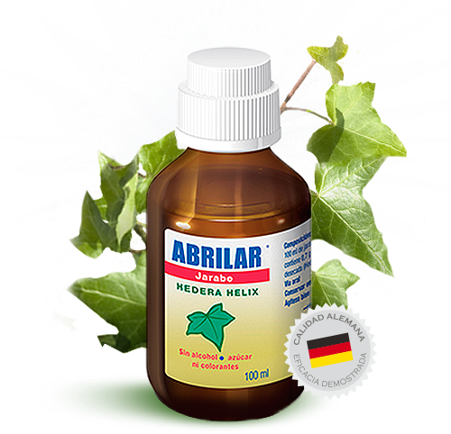

Para esos molestos
problemas de la tos
Abrilar, 100% natural
Gracias a su exclusiva formulación y fabricación en base a Hedera Helix, Abrilar es capaz de tratar con eficacia los procesos relacionados con el trastorno de la secreción bronquial, cuyo síntoma clave es la tos.